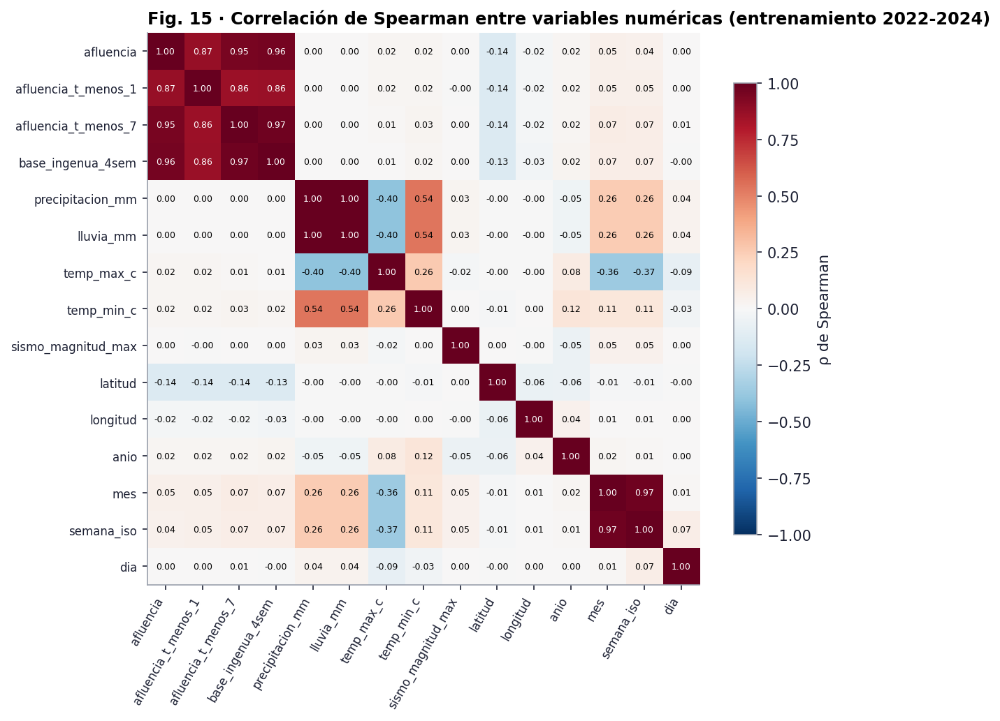
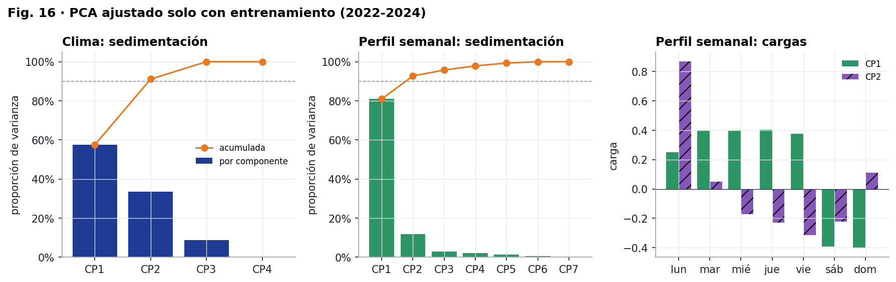
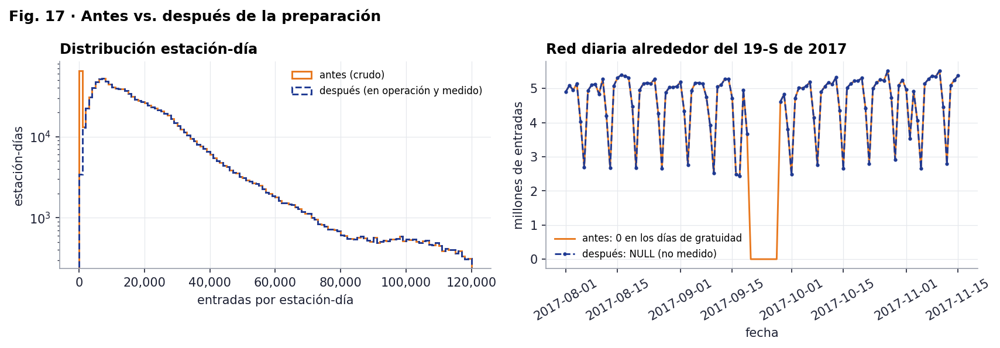

2. Preparación de los datos
Entrega E2 - EDA y Preparación de Datos
Esta página cubre la fase de preparación de CRISP-DM: limpieza, reducción de dimensionalidad, muestreo y la verificación de que la preparación no borró el fenómeno de E0. Cada decisión la toma el código del pipeline, y el registro se genera solo en cada corrida. La versión en lenguaje no técnico está en Decisiones.
2.1 Calidad de los datos y tratamiento del ruido
Primero se diagnosticó (Tabla 1 del EDA) y después se decidió. Nada se eliminó ni se imputó en silencio: cada tratamiento llama a una función de registro con su conteo y su justificación.
Registro de limpieza
Tabla 13. Registro de limpieza generado por el pipeline (tablas/registro_limpieza.csv).
| id | tabla | problema | variable | afectadas | total | % | decisión | justificación |
|---|---|---|---|---|---|---|---|---|
| L01 | festivos (F4) | Fecha de festivo desplazada respecto de la ley | date | 10 | 122 | 8.197 | Se usa la fecha del art. 74 de la LFT; F4 solo valida | Nager.Date recorre Año Nuevo y Día del Trabajo cuando caen en fin de semana (2010-04-30, 2010-12-31, 2011-05-02, 2012-01-02, 2016-05-02, 2017-01-02…); la ley no prevé ese recorrido. Fechas de la ley ausentes en F4: 10 |
| L02 | sismos (F6) | Hora en UTC: el día local puede ser el anterior | time | 4 | 27 | 14.8 | Convertir a hora de la Ciudad de México antes de tomar la fecha | Un sismo de madrugada en UTC ocurrió la noche previa en la CDMX (p. ej. el de Chiapas de 2017: 2017-09-08 04:49 UTC = 2017-09-07 23:49 local) |
| L03 | clima (F5) | Valores faltantes | todas | 0 | 6,056 | 0 | Ninguna acción | La API entrega un registro por día sin huecos en 2010-2026 |
| L04 | clima (F5) | Valores fuera de rango físico | precipitación y temperaturas | 0 | 6,056 | 0 | Ninguna acción | Precipitación >= 0, mínima <= máxima y temperaturas entre -15 y 45 °C |
| L05 | clima (F5) | Variable duplicada | lluvia_mm | 6,056 | 6,056 | 100 | Se pasa a la tabla de reducción (redundante con precipitacion_mm) | En la CDMX no nieva: la lluvia es igual a la precipitación total en todos los días |
| L06 | gtfs (F3) | Identificador con formato distinto | stop_id | 1 | 195 | 0.513 | Leer la línea con una expresión que acepta ‘-’ o ’_’ | B_0200L1_MOCTEZUMA usa ’_’ en lugar de ‘-’ |
| L07 | metro (F1) | Tipos: fecha o afluencia no convertibles | fecha, afluencia | 0 | 1,180,920 | 0 | Ninguna acción | Todas las fechas son ISO válidas y todas las afluencias son enteros |
| L08 | metro (F1) | Afluencia negativa | afluencia | 0 | 1,180,920 | 0 | Ninguna acción | No hay valores negativos |
| L09 | metro (F1) | Columnas redundantes con la fecha | anio, mes | 0 | 1,180,920 | 0 | Descartar anio y mes; se derivan de la fecha en dim_fecha | Coinciden con la fecha en todas las filas; mantenerlas duplica información |
| L10 | metro (F1) | Doble codificación de texto | linea | 171,795 | 1,180,920 | 14.5 | Reparar (latin-1 -> utf-8) | ‘LÃnea 1’ es ‘Línea 1’ mal leído; no cambia el significado |
| L11 | metro (F1) | Doble codificación de texto | estacion | 379,245 | 1,180,920 | 32.1 | Reparar (latin-1 -> utf-8) | ‘Católica’ es ‘Católica’ mal leído; afecta a toda la serie |
| L12 | metro (F1) | Categorías inconsistentes | linea | 24 | 24 | 100 | Mapear a código de línea: 24 textos -> 12 líneas | ‘Linea 1’, ‘Línea 1’ y ‘LÃnea 1’ son la misma línea |
| L13 | metro (F1) | Variantes de escritura de una estación | estacion | 2,314 | 1,180,920 | 0.196 | Unificar al nombre canónico | ‘Gómez Farias’ -> ‘Gómez Farías’; ‘Peñón viejo’ -> ‘Peñón Viejo’ (la fuente cambió la escritura en junio de 2023) |
| L14 | metro (F1) | Duplicados exactos | todas | 0 | 1,180,920 | 0 | Ninguna acción | No hay filas idénticas |
| L15 | metro (F1) | Llave natural duplicada (fecha, línea, estación) | estacion | 62 | 1,180,920 | 0.005 | Reasignar el valor mayor de cada par a ‘Deportivo Oceanía’ | En [‘2020-12’] la línea B trae ‘Oceanía’ dos veces y le falta ‘Deportivo Oceanía’. En los meses vecinos esta supera a la otra en 97-100 % de los días |
| L16 | metro (F1) × gtfs (F3) | Llaves que no coinciden al unir | estacion | 8 | 195 | 4.103 | Tabla de equivalencias (8 nombres compuestos); quedan 0 sin pareja | 187 de 195 unen por nombre normalizado; los otros se escriben distinto (p. ej. ‘Garibaldi/Lagunilla’ vs ‘Garibaldi y Lagunilla’) |
| L17 | metro (F1) | Días en que toda la red registra menos del 10% de su nivel habitual | afluencia | 1,950 | 1,180,920 | 0.165 | Dejar afluencia NULL (no medida) en esos días y marcarlos en dim_fecha | 10 días: 2016-03-16 (3%), 2016-03-17 (4%), 2017-09-20 (0%), 2017-09-21 (0%), 2017-09-22 (0%), 2017-09-23 (0%), 2017-09-24 (0%), 2017-09-25 (0%), 2017-09-26 (0%), 2017-09-27 (0%). Coinciden con la gratuidad del transporte por la contingencia ambiental de marzo de 2016 y tras el sismo del 19-S de 2017: los torniquetes no contaron. No es demanda cero ni casi cero |
| L18 | metro (F1) | Ceros antes de la inauguración | afluencia | 20,780 | 1,180,920 | 1.760 | Conservar 0; estado_servicio = no_inaugurada (versión SCD2) | Ceros estructurales: la Línea 12 abrió en octubre de 2012 y la serie empieza en 2010 |
| L19 | metro (F1) | Rachas de ceros de 7 días o más | afluencia | 39,190 | 1,180,920 | 3.319 | Conservar 0; estado_servicio = cerrada (versión SCD2) | Cierres reales (L12 2014-2015 y 2021-2024, L1 2022-2025, pandemia 2020, incendio del PCC 2021, L9 2023-2024…). Se excluyen del entrenamiento, no se imputan |
| L20 | metro (F1) | Ceros aislados (menos de 7 días) | afluencia | 477 | 1,180,920 | 0.040 | Conservar 0 con es_registro_cero = TRUE | Cierres de un día por marchas o eventos (p. ej. Zócalo en varios 8 de marzo): son el fenómeno que estudia P4, no un error |
| L21 | metro (F1) | Atípicos (|z robusto| >= 3.5) | afluencia | 18,553 | 1,119,000 | 1.658 | Conservar el valor y marcar es_atipico = TRUE | 4,867 altos y 13,686 bajos frente a las 9 semanas vecinas del mismo día (MAD con piso de 10% de la mediana local). Son festivos, vacaciones, peregrinaciones, marchas o cierres parciales: el fenómeno de P4. Eliminarlos borraría justamente los días que el operador quiere anticipar |
| L22 | metrobús (F2) | Categorías inconsistentes | linea | 14 | 14 | 100 | Mapear a código: 14 textos -> 7 líneas | ‘Línea 1’ y ‘linea 1’ son la misma línea |
| L23 | metrobús (F2) | Fuera del periodo común | fecha | 11,340 | 53,732 | 21.1 | Excluir días anteriores a 2010-01-01 | Metro, clima y dim_fecha empiezan en 2010; P3 y P5 solo comparan días en común. Incluye el primer día de la serie (2005-07-26), que trae 3 millones en una línea |
| L24 | metrobús (F2) | Texto ‘NaN’ antes de inaugurar la línea | afluencia | 7,887 | 42,392 | 18.6 | Excluir la fila (la línea no existía) | Ausencia estructural, no un dato perdido: todos los ‘NaN’ son anteriores al primer valor de su línea. Imputarlos inventaría demanda |
| L25 | metrobús (F2) | Valor imposible en día de servicio | afluencia | 1 | 34,505 | 0.003 | Dejar NULL (no imputar) | 2017-09-20 línea 2: 9 entradas frente a una mediana de ~100 mil |
Criterios por tipo de problema
| Problema | Dónde | Tratamiento | Por qué así y no de otra forma | Qué pasa con E0 |
|---|---|---|---|---|
| Faltantes estructurales | Metrobús: 7,887 ‘NaN’ antes de que existiera cada línea (L24) | Excluir la fila | Los ‘NaN’ todos son anteriores al primer dato de su línea (el pipeline lo comprueba con un assert): no es un dato perdido sino una línea que no existía. Imputar inventaría pasajeros |
Ninguna pérdida para P3 y P5 |
| Faltantes disfrazados de cero | Metro: 10 días en que toda la red registra menos del 10 % de su nivel (L17) | Afluencia NULL y es_dia_sin_medicion en dim_fecha |
El transporte fue gratuito y los torniquetes no contaron: el cero no es demanda. No se imputa porque nadie sabe cuánta gente viajó, y la regla (red < 10 % de la mediana del mismo día en las 4 semanas previas) no confunde ningún festivo: el día más bajo que no es de gratuidad queda en 25 % | P2 no aprende que un sismo vacía el Metro; P4 no cuenta estos días como anomalías |
| Ceros estructurales | L12 antes de abrir (20,780) y cierres de 7 días o más (39,190) (L18, L19) | Conservar el 0 y crear una versión SCD2 de la estación (no_inaugurada o cerrada) |
El 0 es verdadero: la estación no operó. Imputar fingiría servicio; borrar perdería la historia que necesitan P4 y P5 | P2 entrena solo con días en operando (riesgo R3); P5 usa los cierres como cuasiexperimento |
| Ceros puntuales | 477 estación-días con menos de 7 días seguidos en cero (L20) | Conservar con es_registro_cero |
Son cierres de un día por marchas y eventos: el fenómeno de P4 | P4 los atribuye a cierre_puntual |
| Duplicados exactos | Ninguno (L14) | — | Se comprobó | — |
| Duplicados de llave natural | 31 pares “Oceanía” en la Línea B, diciembre de 2020 (L15) | El valor mayor de cada par pasa a “Deportivo Oceanía” | Ese mes falta justo esa estación. En 2019 Deportivo Oceanía supera a Oceanía el 100 % de los días, y el 97 % en octubre-noviembre de 2020. La regla no depende del orden de las filas, que BigQuery no garantiza | El grano vuelve a ser único (195 por día) |
| Atípicos | 18,553 estación-días con |z robusto| ≥ 3.5 (L21) | Conservar el valor y marcar es_atipico |
El z robusto compara contra la mediana del mismo día de la semana en las 9 semanas alrededor, con la MAD como escala (y un piso del 10 % de la mediana para no marcar variaciones de ±15 % en estaciones muy estables). Los altos son peregrinaciones y eventos; los bajos, festivos y vacaciones. Son exactamente los días que P4 quiere explicar y que P2 quiere anticipar | Ningún valor cambia; la marca se usa para describir, no para predecir (ver fuga en 2.2) |
| Valor imposible | Metrobús L2, 2017-09-20: 9 entradas (L25) | NULL | En un día de servicio con mediana de unos 135 mil, 9 es un error de conteo (era un día de gratuidad) | Una fila de 34,505 |
| Inconsistencias de categorías | 24 textos de línea, 14 del Metrobús, 2 estaciones escritas de dos formas (L10-L13, L22) | Reparar la codificación y mapear a un catálogo canónico (config.yaml) |
La regla latin-1 → utf-8 solo se aplica a textos con la marca de doble codificación (‘Ã’), así que no puede dañar un nombre correcto | Las agregaciones por línea y estación de P1 a P5 se vuelven confiables |
| Tipos, unidades y rangos | Fechas, enteros, clima (L03, L04, L07, L08) | Ninguna acción | Todo pasó las reglas: fechas ISO, afluencia ≥ 0, precipitación ≥ 0, mínima ≤ máxima, temperaturas entre −15 y 45 °C | — |
| Fechas legales vs. F4 | 10 festivos que Nager.Date recorre (L01) | La fecha la decide el art. 74 de la LFT; F4 solo valida | La ley no recorre el 1 de enero ni el 1 de mayo cuando caen en fin de semana | es_festivo_oficial correcto para P4 |
| Llaves que no coinciden | 8 de 195 estaciones no unen con el GTFS por nombre (L16) | Tabla de equivalencias en config.yaml |
187 unen por nombre normalizado; los 8 restantes son nombres compuestos (“Garibaldi/Lagunilla” vs. “Garibaldi y Lagunilla”). No se pierde ninguna fila | Coordenadas completas para P3 |
| Periodo fuera de alcance | Metrobús 2005-2009 (L23) | Excluir | El DW cubre 2010-2026 porque Metro y clima empiezan ahí. Incluye el primer día de la serie, con 3 millones de entradas en una línea (error evidente) | P3 y P5 solo comparan días en común |
2.2 Reducción de dimensionalidad
Criterio explícito, fijado antes de ver los resultados (config.yaml):
- Chi-cuadrada de cada variable categórica contra la etiqueta
es_alta_demanda. Con n = 192 mil cualquier diferencia resulta significativa, así que se exigen dos condiciones: p ajustada por Bonferroni < 0.01 y V de Cramér ≥ 0.10 (efecto pequeño según Cohen). Si una variable es significativa pero con V < 0.10, se conserva solo si una pregunta de E0 la necesita (“Conservar (dominio)”); si no, se descarta como predictor. - Correlación de Spearman entre numéricas. Con |ρ| ≥ 0.90 dos variables son redundantes y se queda la que está ligada al criterio de éxito o la más interpretable.
- PCA sobre las numéricas estandarizadas, con objetivo de 90 % de varianza acumulada. Se conservan las originales si las componentes no reducen de forma útil o hacen perder la interpretación.
Sin fuga de información. El dataset de modelado (2022-2026, solo días en operando, 303 mil estación-días) se parte por fecha: entrenamiento hasta 2024-12-31 y prueba de 2025 en adelante. Los cortes de discretización (cuartiles de temperatura), la estandarización y los dos PCA se ajustan solo con entrenamiento. La base ingenua y los rezagos usan únicamente días anteriores a cada fecha. No se sobremuestrea nada. La partición definitiva se hará en el modelado, y el pipeline ya deja el mecanismo listo (fin_entrenamiento).
Chi-cuadrada y V de Cramér
Tabla 14. Variables categóricas contra la etiqueta de alta demanda (entrenamiento, 192,653 estación-días). Todas cumplen la condición de frecuencia esperada ≥ 5 por celda.
| variable | descripción | categorías | chi2 | gl | frec. esperada mínima | V de Cramér | p ajustada (Bonferroni) | significativa | efecto >= V mín. |
|---|---|---|---|---|---|---|---|---|---|
| mes | mes (12) | 12 | 4,570 | 11 | 1,428 | 0.154 | 0 | sí | sí |
| dia_semana_num | día de la semana (7) | 7 | 1,518 | 6 | 2,610 | 0.089 | 0 | sí | no |
| es_atipico | marca de atípico | 2 | 491.8 | 1 | 262.6 | 0.051 | 7.46e-108 | sí | no |
| categoria_lluvia | categoría de lluvia (4) | 4 | 436.4 | 3 | 152.8 | 0.048 | 3.83e-93 | sí | no |
| linea_codigo | línea (12) | 12 | 413.7 | 11 | 1,044 | 0.046 | 9.99e-81 | sí | no |
| es_fin_de_semana | fin de semana | 2 | 243.2 | 1 | 5,256 | 0.036 | 1.03e-53 | sí | no |
| es_festivo_oficial | festivo LFT | 2 | 221.2 | 1 | 369.0 | 0.034 | 6.59e-49 | sí | no |
| es_dia_quincena | día de quincena | 2 | 166.4 | 1 | 1,206 | 0.029 | 5.90e-37 | sí | no |
| temp_max_cuartil | temperatura máx. (cuartiles de entrenamiento) | 4 | 130.8 | 3 | 4,421 | 0.026 | 4.69e-27 | sí | no |
| es_semana_santa | Jueves/Viernes Santo | 2 | 92.8 | 1 | 100.7 | 0.022 | 7.35e-21 | sí | no |
| evento_masivo | evento masivo (6) | 6 | 66.9 | 5 | 50.3 | 0.019 | 5.96e-12 | sí | no |
| es_correspondencia | estación de correspondencia | 2 | 58.1 | 1 | 5,766 | 0.017 | 3.30e-13 | sí | no |
| sismo | día con sismo | 2 | 1.741 | 1 | 62.9 | 0.003 | 1.000 | no | no |
Solo el mes supera los dos umbrales (V = 0.154). La alta demanda se concentra en enero (19 % de los estación-días), febrero (16 %) y abril (14 %), y es mínima en junio y julio (3-5 %). Son los regresos de vacaciones: la base de 4 semanas todavía incluye días de diciembre o de Semana Santa, así que el primer mes “normal” la supera. Es una pista para E3: un calendario escolar, que ninguna fuente abierta trae por día, explicaría buena parte de la etiqueta. El día de la semana queda en V = 0.089, como era de esperar: la etiqueta ya compara cada día contra el mismo día de la semana. El sismo es la única variable sin asociación (p ajustada = 1). Sale del modelo, pero se queda en el DW como causa candidata de anomalías (P4).
Correlación

Tabla 15. Pares con |ρ| ≥ 0.90.
| variable 1 | variable 2 | rho de Spearman |
|---|---|---|
| afluencia | afluencia_t_menos_7 | 0.947 |
| afluencia | base_ingenua_4sem | 0.955 |
| afluencia_t_menos_7 | base_ingenua_4sem | 0.973 |
| precipitacion_mm | lluvia_mm | 1.000 |
| mes | semana_iso | 0.971 |
La Fig. 15 muestra tres bloques. (1) Las variables de demanda (afluencia, rezagos y base) se correlacionan entre 0.86 y 0.97 porque el tamaño de la estación domina todo. (2) La precipitación y la lluvia son la misma variable (ρ = 1.00). (3) El mes y la semana ISO son casi la misma (0.97). De la Tabla 15 salen tres decisiones: se descarta lluvia_mm, se descarta semana_iso y se combina afluencia_t_menos_7 con la base (es uno de los cuatro valores que la base promedia). Los pares con la propia afluencia no son redundancia entre predictores sino relación con el objetivo, que es justo lo que se busca.
Tabla 16. Relación con el objetivo en escala relativa (cociente afluencia / base), para que el tamaño de la estación no domine.
| variable | rho con el cociente afluencia/base | p |
|---|---|---|
| t-1 / base | 0.288 | 0 |
| t-7 / base | 0.305 | 0 |
| precipitacion_mm | -0.029 | 2.92e-36 |
| temp_max_c | 0.057 | 7.01e-139 |
| temp_min_c | -0.026 | 2.70e-30 |
| sismo_magnitud_max | -0.017 | 1.70e-13 |
| mes | -0.089 | 0 |
| dia | 0.018 | 3.75e-15 |
En escala relativa, los rezagos siguen aportando (ρ ≈ 0.29-0.31) y el clima casi nada (|ρ| < 0.06). Esto confirma el resultado negativo del EDA (H3).
PCA

Tabla 17. PCA del clima (4 variables estandarizadas, días de entrenamiento).
| componente | varianza explicada | acumulada |
|---|---|---|
| CP1 | 0.575 | 0.575 |
| CP2 | 0.336 | 0.911 |
| CP3 | 0.089 | 1.000 |
| CP4 | 4.02e-18 | 1.000 |
| variable | CP1 | CP2 | CP3 | CP4 |
|---|---|---|---|---|
| precipitacion_mm | 0.650 | -0.021 | -0.278 | -0.707 |
| lluvia_mm | 0.650 | -0.021 | -0.278 | 0.707 |
| temp_max_c | -0.249 | 0.728 | -0.639 | 0 |
| temp_min_c | 0.305 | 0.685 | 0.662 | 0 |
CP1 (57 %) es “día de lluvia”: cargan la precipitación, la lluvia y la temperatura mínima (las noches nubladas son menos frías), y la máxima en sentido contrario. CP2 (34 %) es “nivel de temperatura”. Dos componentes alcanzan el 91 %. La CP4 tiene varianza 0, la huella algebraica de que precipitación y lluvia son idénticas. Decisión: conservar las originales. Al quitar lluvia_mm quedan 3 variables, así que pasar a 2 componentes casi no ahorra nada y se pierde la interpretación.
Tabla 18. PCA del perfil semanal de las 195 estaciones (participación de cada día; entrada del clustering de P3).
| componente | varianza explicada | acumulada |
|---|---|---|
| CP1 | 0.810 | 0.810 |
| CP2 | 0.118 | 0.927 |
| CP3 | 0.030 | 0.958 |
| CP4 | 0.021 | 0.979 |
| CP5 | 0.015 | 0.993 |
| CP6 | 0.007 | 1.000 |
| CP7 | 0 | 1.000 |
| día | CP1 | CP2 | CP3 |
|---|---|---|---|
| lun | 0.249 | 0.870 | 0.331 |
| mar | 0.401 | 0.048 | -0.384 |
| mié | 0.396 | -0.171 | -0.260 |
| jue | 0.404 | -0.230 | -0.030 |
| vie | 0.376 | -0.314 | 0.566 |
| sáb | -0.393 | -0.221 | 0.457 |
| dom | -0.402 | 0.110 | -0.382 |
CP1 (81 %) contrapone lunes-viernes (cargas positivas) contra sábado-domingo (negativas): es el eje “estación de trabajo vs. estación de paseo” que la entropía del EDA ya sugería. CP2 (12 %) separa el lunes del viernes. Con dos componentes se explica el 93 %. Decisión: conservar las 7 participaciones en el DataMart (v_p3_perfil_semanal_estacion) y dejar documentado que en E3 el clustering se probará sobre las 2 componentes y sobre las 7 participaciones.
Tabla de decisión por variable
Tabla 19. Todas las variables del dataset analítico y del DW, con su decisión.
| variable | tipo | técnica(s) | decisión | justificación |
|---|---|---|---|---|
| fecha | fecha | — | Conservar (llave) | Llave temporal del grano; de ella se derivan las variables de calendario. |
| anio | numérica discreta | correlación | Conservar | ρ(anio, afluencia) = 0.02; no es redundante con ninguna otra y marca el régimen posterior a la pandemia (riesgo R5). |
| mes | categórica ordinal | χ² + correlación | Conservar | V = 0.154: única variable que pasa los dos umbrales (p ajustada < 0.01 y V ≥ 0.1). ρ(mes, semana_iso) = 0.97: de la pareja se queda mes, más interpretable. |
| semana_iso | numérica discreta | correlación | Descartar | ρ(mes, semana_iso) = 0.97 ≥ 0.9: redundante con mes. |
| dia (del mes) | numérica discreta | correlación | Transformar | ρ(dia, cociente) = 0.018 con el cociente contra la base: sin relación útil como número; su único efecto esperado (pago de quincena) ya está en es_dia_quincena. |
| nombre_mes, nombre_dia | texto | no aplica (etiqueta) | Conservar en el DW (descriptiva) | Etiquetas para reportes; repiten mes y dia_semana_num, no entran al modelo. |
| dia_semana_num | categórica (7) | χ² + PCA del perfil | Conservar (dominio) | V = 0.089 < 0.1, pero la etiqueta ya compara contra el mismo día de la semana, así que su efecto queda absorbido por construcción. Es el eje de la línea base, de P1 y del perfil semanal de P3. |
| es_fin_de_semana | binaria | χ² | Combinar | V = 0.036; se deriva de dia_semana_num sin pérdida. |
| es_dia_quincena | binaria | χ² | Conservar (dominio) | V = 0.029; efecto pequeño, pero la quincena es variable de calendario pedida en P2 desde E0. |
| es_festivo_oficial, nombre_festivo | binaria / texto | χ² | Conservar (dominio) | V = 0.034; poco frecuente (119 días), pero es la causa que más anomalías explica en P4. |
| es_semana_santa | binaria | χ² | Conservar (dominio) | V = 0.022; causa conocida de caídas de demanda (P4). |
| evento_masivo | categórica (6) | χ² | Conservar (dominio) | V = 0.019; nueva en E2 por la retroalimentación de E1; explica cierres puntuales y picos (P4). |
| es_dia_sismo, sismo_magnitud_max | binaria / numérica | χ² + correlación | Descartar como predictor; conservar en el DW | χ² no significativo (p ajustada = 1.00, V = 0.003) y ρ(sismo_magnitud_max, cociente) = -0.017: un sismo no cambia la demanda del día. Se queda en dim_fecha como causa candidata de P4 (retroalimentación de E1). |
| es_dia_sin_medicion | binaria | no aplica (filtro) | Conservar en el DW | Marca los 10 días sin conteo; dentro del dataset analítico vale siempre falso. |
| linea_codigo | categórica (12) | χ² | Conservar (dominio) | V = 0.046; es la dimensión de P1, P3 y P5. |
| estacion_nk, nombre_oficial, nombre_en_fuente, gtfs_stop_id | identificadores | no aplica (llave) | Conservar (llave / descriptiva) | Identifican la unidad de análisis; no son predictores. |
| sistema, nombre_linea, terminales, color_hex, gtfs_route_id | texto (dim_linea) | no aplica (etiqueta) | Conservar en el DW (descriptiva) | Atributos de la línea para reportes y para cruzar Metro con Metrobús (P3, P5); no son predictores. |
| llaves sustitutas y metadatos (fecha_key, estacion_key, vigencias, es_version_vigente, fecha_descarga) | llaves | no aplica | Conservar en el DW | Estructura del esquema estrella y de la SCD tipo 2; no son variables de análisis. |
| latitud, longitud | numéricas | correlación | Conservar | ρ(latitud, afluencia) = -0.14; no son redundantes y dan la cercanía Metro ↔︎ Metrobús de P3. |
| es_correspondencia | binaria | χ² | Combinar | V = 0.017; es un atributo fijo de cada estación, así que en un modelo por estación ya está implícito. Se queda en dim_estacion para describir P1 y P3. |
| estado_servicio | categórica (3) | no aplica (filtro) | Conservar en el DW | Decide qué días entran al entrenamiento (solo ‘operando’, riesgo R3); dentro del dataset es constante. |
| precipitacion_mm | numérica | correlación + PCA | Conservar (dominio) | ρ(precipitacion_mm, cociente) = -0.029: relación débil (Fig. 10, resultado negativo), pero es la hipótesis de clima de P2 y una causa candidata de P4; E3 medirá si aporta. |
| lluvia_mm | numérica | correlación + PCA | Descartar | ρ(precipitacion_mm, lluvia_mm) = 1.00: idéntica a la precipitación los 6,056 días (CP4 del PCA con varianza 0). Se quita también del DW. |
| categoria_lluvia | categórica (4) | χ² | Conservar (dominio) | V = 0.048; versión discreta de la precipitación para atribuir anomalías en P4. |
| temp_max_c, temp_min_c | numéricas | χ² (cuartiles) + correlación + PCA | Descartar como predictor; conservar en el DW | V = 0.026, ρ(temp_max_c, cociente) = 0.057 y ρ(temp_min_c, cociente) = -0.026: efecto mínimo y ninguna pregunta de E0 lo pide. No son redundantes entre sí (ρ(temp_max_c, temp_min_c) = 0.26), por eso quedan en dim_clima como contexto de los días anómalos (P4). |
| afluencia | numérica (objetivo) | — | Conservar (medida) | Medida del hecho y objetivo de la regresión de P2. |
| afluencia_t_menos_1 | numérica | correlación | Conservar | ρ(t-1 / base, cociente) = 0.288; es el dato más reciente disponible a las 20:00 h de la víspera. ρ(afluencia_t_menos_1, base_ingenua_4sem) = 0.86 < 0.9: no es redundante con la base. |
| afluencia_t_menos_7 | numérica | correlación | Combinar | ρ(afluencia_t_menos_7, base_ingenua_4sem) = 0.97 ≥ 0.9: redundante; ya es uno de los 4 valores que promedia la base. |
| base_ingenua_4sem | numérica | correlación | Conservar | Línea base obligatoria del criterio de éxito de E0; define la etiqueta de alta demanda. |
| es_alta_demanda | binaria (objetivo) | — | Conservar (objetivo) | Etiqueta de la clasificación de P2 (umbral 1.2 × base, Fig. 13). |
| es_registro_cero | binaria | no aplica (medida no aditiva) | Conservar en el DW | Separa cierres de un día (P4). |
| es_atipico | binaria | χ² | Descartar como predictor (fuga); conservar en el DW | V = 0.051. Se calcula con semanas posteriores al día (ventana centrada): usarla para pronosticar filtraría el futuro. En el DW sirve para describir P4. |
| perfil semanal (7 participaciones por estación) | numéricas derivadas | PCA | Conservar originales | CP1 explica 81% (entre semana vs. fin de semana) y CP1+CP2 93%; 2 componentes alcanzan 90%. Para el clustering de P3 (E3) se probarán las 7 participaciones y las 2 componentes. |
| clima (4 numéricas) | numéricas | PCA | Conservar originales | 2 componentes alcanzan 90%; al quitar lluvia_mm quedan 3 variables, así que las componentes no ahorran casi nada y se pierde la interpretación. |
2.3 Muestreo
Tabla 20. Decisión de muestreo.
| aspecto | valor |
|---|---|
| Población | 1,180,920 estación-días del Metro (2010-01-01 a 2026-07-31) y 34,505 línea-días del Metrobús |
| Volumen | 478 MB en memoria; la tabla staging del Metro pesa ~60 MB en BigQuery (la capa gratuita permite 1 TB de consultas al mes) |
| Desbalance | No aplica: no se entrena ningún modelo en E2 |
| Redundancia | Cada fila es un estación-día distinto; no hay registros repetidos que resumir |
| Decisión | No se muestrea: EDA, reducción y carga al DW usan la población completa |
| Muestra del repositorio | Solo para probar el pipeline sin credenciales (–fuente muestra): una semana completa por año y trimestre |
No se muestrea. La población completa (1.18 millones de estación-días) cabe en memoria, el pipeline completo tarda menos de un minuto en local, y BigQuery la procesa dentro de la capa gratuita (la tabla de staging pesa unos 60 MB y la ingesta con list_rows no cobra bytes escaneados). No hay una clase a balancear porque en E2 no se entrena. Tampoco hay redundancia que resumir, porque cada fila es un estación-día distinto.
Muestra del repositorio. GitHub no debe alojar el CSV de 60 MB, y la ayudantía necesita poder correr el pipeline sin credenciales. Por eso se versiona una muestra pequeña en pipeline/data/sample/ (0.6 MB):
- Población: estación-días medidos de 2010-2026.
- Método: estratificado por año y trimestre, con una semana completa (lunes a domingo) por estrato elegida al azar. Se usan bloques de semanas completas para no romper el orden de la serie ni el ciclo semanal; un muestreo aleatorio simple de filas dejaría semanas sin sábado o sin domingo.
- Tamaño: 67 semanas, 90,870 estación-días (7.7 %). Se descartó una semana por mes porque la muestra pesaría 3 veces más sin ganar cobertura de días de la semana.
- Semilla fija:
20261106(config.yaml).
Tabla 21. Representatividad de la muestra frente a la población.
| variable | prueba | estadístico | p | media población | media muestra | mediana población | mediana muestra |
|---|---|---|---|---|---|---|---|
| afluencia estación-día | Kolmogorov-Smirnov | 0.007 | 0.001 | 19,640 | 19,467 | 14,453 | 14,275 |
| precipitación diaria (mm) | Kolmogorov-Smirnov | 0.039 | 0.522 | 3.037 | 3.322 | 0.300 | 0.300 |
| línea | χ² de bondad de ajuste | 1.27e-28 | 1.000 | — | — | — | — |
| día de la semana | χ² de bondad de ajuste | 4.600 | 0.596 | — | — | — | — |
| categoría de lluvia | χ² de bondad de ajuste | 3.031 | 0.387 | — | — | — | — |
| año | χ² de bondad de ajuste | 306.3 | 1.27e-55 | — | — | — | — |
Lectura. La afluencia de la muestra tiene una distribución prácticamente igual a la de la población. El estadístico KS es de 0.007 (las funciones de distribución difieren en menos de un punto porcentual) y la media difiere 0.9 %. El p-valor es pequeño solo porque n = 90 mil hace significativa cualquier diferencia. La precipitación (KS p = 0.52), el día de la semana (χ² p = 0.60), la categoría de lluvia (p = 0.39) y la línea (idéntica por diseño) no muestran diferencias. El año sí difiere (p < 0.001), y es por diseño: cada año aporta las mismas semanas aunque 2026 solo tenga siete meses de datos. La muestra sirve para probar el pipeline, no para estimar totales anuales, y así se declara.
2.4 Verificación: antes vs. después
Tabla 22. Medidas clave antes y después de la preparación. “Después” incluye solo los estación-días medidos y en operación, que es lo que verá el modelado.
| variable | etapa | n | media | mediana | desv. est. | IQR | asimetría | % ceros |
|---|---|---|---|---|---|---|---|---|
| afluencia diaria de la red | antes | 6,056 | 3,823,500 | 4,006,165 | 1,198,538 | 2,129,572 | -0.444 | 0.001 |
| afluencia diaria de la red | después | 6,046 | 3,829,762 | 4,009,954 | 1,189,583 | 2,124,006 | -0.417 | 0 |
| afluencia estación-día (Metro) | antes | 1,180,920 | 19,608 | 14,426 | 19,290 | 17,885 | 2.593 | 0.053 |
| afluencia estación-día (Metro) | después | 1,119,000 | 20,692 | 15,297 | 19,242 | 17,734 | 2.646 | 4.26e-04 |
| afluencia línea-día (Metrobús) | antes | 36,505 | 167,327 | 137,090 | 117,346 | 122,650 | 1.781 | 0 |
| afluencia línea-día (Metrobús) | después | 34,504 | 165,337 | 135,350 | 117,324 | 118,685 | 1.487 | 0 |
Tabla 23. ¿Se conservó el fenómeno de E0?
| etapa | Gini estaciones 2025 | top 10 % estaciones 2025 | H norm. día de la semana 2025 | domingo / lunes-viernes (mediana red 2022+) | top-10 estaciones 2025 |
|---|---|---|---|---|---|
| antes | 0.377 | 0.286 | 0.990 | 0.512 | Cuatro Caminos (L2), Constitución de 1917 (L8), Indios Verdes (L3), Tacubaya (L9), Tláhuac (L12)… |
| después | 0.377 | 0.286 | 0.990 | 0.512 | Cuatro Caminos (L2), Constitución de 1917 (L8), Indios Verdes (L3), Tacubaya (L9), Tláhuac (L12)… |

Conclusión: la preparación conservó el fenómeno.
- La concentración que define a P1 no se movió: Gini de 0.377 y top 10 % = 28.6 %, iguales antes y después, con las mismas 5 estaciones a la cabeza.
- El patrón semanal tampoco: domingo = 51 % de un día laboral y entropía por día de la semana de 0.990.
- La afluencia estación-día perdió casi todos sus ceros (de 5.3 % a 0.04 %, los cierres de un día que se conservan a propósito). Su mediana subió de 14,426 a 15,297 y la asimetría casi no cambió (2.59 → 2.65): la cola derecha, donde viven los picos, está intacta porque ningún atípico se eliminó.
- La red diaria pierde los 10 días sin medición (Fig. 17, derecha): ya no hay un “0” artificial en septiembre de 2017, y su asimetría pasa de −0.44 a −0.42.
- En el Metrobús la asimetría baja de 1.78 a 1.49 porque se fue el valor de 3 millones del 26 de julio de 2005.
El hallazgo principal del EDA (H1: concentración estable en pocas terminales) no desapareció, así que no hay señal de alerta.